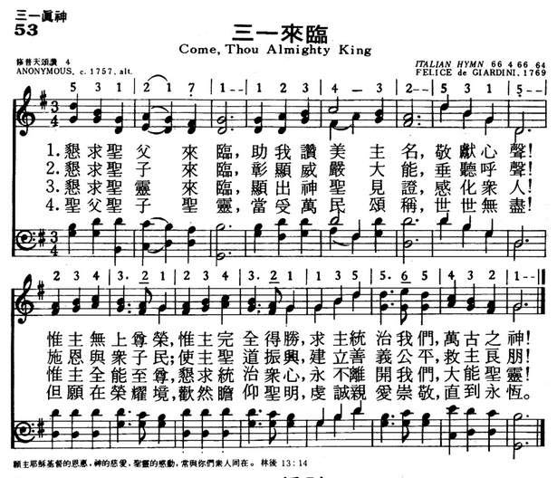
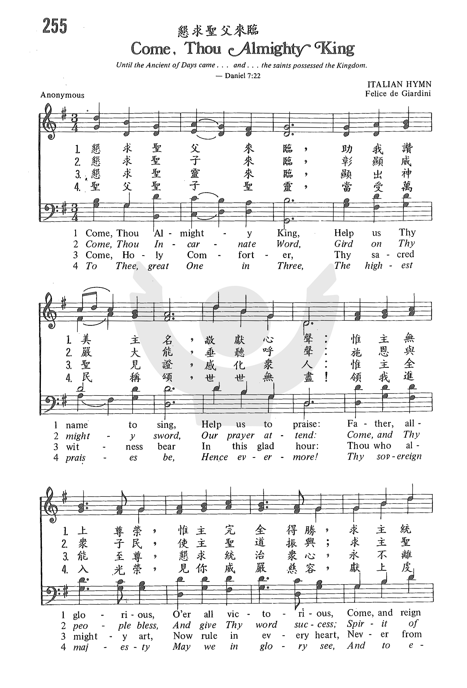
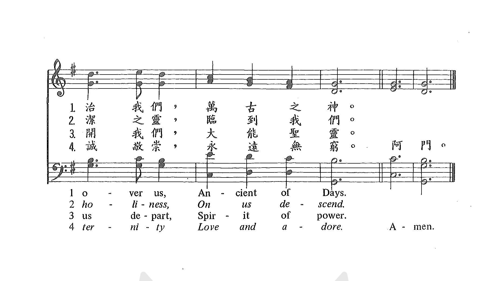

| 簡介 Come, Thou Almighty King |
|
The author of this Trinitarian text is unknown, but this hymn has proved popular since the middle of the 18th century, partly because of its effective use of biblical metaphors, but also because of the strength of this tune, which was composed especially for these words. |
Come, Thou Almighty King,
|
【求大君王來臨】 詩集：生命聖詩，3 |
|
1 Come, thou Almighty King, 2 Come, thou Incarnate Word, 3 Come, Holy Comforter, 4 To the great One in Three |
求大君王來臨，容我讚美你名，高聲稱頌。 惟你尊榮至聖，惟你完全得勝，懇求萬古之神，治理統領。 懇求化身之道，佩著真理寶劍，垂聽禱告。 施恩與眾百姓，使主聖道昌盛，聖潔公義的靈，使我成聖。 求保惠師聖靈，此刻臨近見證，顯出神聖。 你是全能主宰，今住眾人心內，統治永不離開，聖靈同在。 三一真神至上，當受萬民頌揚，世世無疆。 願榮耀中得見真神尊貴威嚴；敬愛，尊崇，奉獻，永恆不變。
|
|
https://www.mred365.cn/szxg/7056.html
 https://www.zanmeishi.com/tab/13633.html?songbook=1&index=2 https://www.zanmeishige.com/tab/25613.html?songbook=1&index=255

 |
|
Scripture References:
st.3 = John 15:26
The anonymous text dates from before 1757, when it was published in a leaflet and bound into the 1757 edition of George Whitefield's Collection of Hymns for Social Worship. The text appears to be patterned after the British national anthem, "God Save the King." Filled with names for members of the Godhead, this song exhibits a common trinitarian structure, addressing God the Father (st. 1), God the Son (st. 2), and God the Holy Spirit (st. 3), concluding with a doxology to the Trinity (st. 4).
The text has often been attributed to Charles Wesley, since the leaflet also included a hymn text from his pen (“Jesus, Let Thy Pitying Eye"); however, "Come, Thou Almighty King" was never printed in any of the Wesley hymnals, and no other Wesley text is written in such an unusual mete
Liturgical Use:
Beginning of worship; as a doxology (st.4)
--Psalter Hymnal
Handbook
===================
Come, Thou Almighty King. [Holy Trinity.] The
earliest form in which this hymn is found is in 5 stanzas of 7 lines, with
the title, "An Hymn to the Trinity," on a tract of four pages, together with
stanzas 1, 2, 6, 10, 11, and 12, of C. Wesley's hymn on "The Backslider,"
beginning "Jesus, let Thy pitying eye," &c, thus making up a tract of two
hymns. The date of this tract is unknown. It is bound up with the British
Museum copy of the 6th ed. of G. Whitefield's Collection, 1757, and
again with the copies in the same library of the 8th ed., 1759, and the 9th,
1760. In subsequent editions beginning with the 10th, 1761, both hymns were
incorporated in the body of the book. M. Madan included it in the Appendix to
his Collection in 1763, No. cxcv., and through this channel,
together with the WhitefieldCollection, it has descended to modern
hymnals. The loss of the titlepage (if any) of the above tract renders the
question of its authorship one of some doubt. The first hymn in the tract is
compiled, as indicated, from C. Wesley's hymn, "Jesus, let Thy pitying eye,"
which appeared in his Hymns & Sacred Poems, 1749, some eight years
before the abridged form was given in G. Whitefield’s Collection.
The hymn, "Come, Thou Almighty King," however, cannot be found in any known
publication of C. Wesley, and the assigning of the authorahip to him is pure
conjecture. Seeing that it is given, together with another hymn, at the end
of some copies of the 6th, 8th and 9th ed. of Whitefield's Collection (1757,
1759 and 1760), and was subsequently em¬bodied in that Collection,
the most probable conclusion is that both hymns were printed by Whitefield
as additions to those editions of his collection, and that, as in the one
case, the hymn is compiled from one by C. Wesley, so in this we have
probably the reprint of the production of an author to us as yet unknown.
Much stress has been laid on the fact that the late D. Sedgwick always
maintained the authorship of C. Wesley, and that from his decision there was
no appeal. The "S. MSS." show clearly that (1) Sedgwick's correspondence
respecting this hymn was very extensive; (2) that he knew nothing of the
British Museum copies noted above; (3) that he had no authority for his
statement but his own private opinion Based on what he regarded as internal
evidence alone; (4) and that all the Wesleyan authorities with whom he
corresponded, both in G. Britain and America, were against him. His
authority is, therefore, of no value. The evidence to the present time will
admit of no individual signature. It is "Anon.”
The use of this hymn, both in Great Britain, the Colonies, and America, is
very extensive. It has also been rendered into various languages. Original
text, Lyra Britannica, 18G7, p. 656; Snepp's Songs of Grace &
Glory, 1872.
--John Julian, Dictionary of Hymnology (1907)
In his first letter to Timothy, the apostle Paul warns him that the Christian life is a constant war against evil. He commands Timothy to “Fight the good fight of the faith” (1 Timothy 6:12, ESV). A few verses later, Paul describes the one for whose sake we fight: “he who is the blessed and only Sovereign, the King of kings and Lord of lords, who alone has immortality, who dwells in unapproachable light, whom no one has ever seen or can see. To him be honor and eternal dominion. Amen” (1 Timothy 6:15-16, ESV). In this hymn, we praise God as our King and Ruler, addressing each Person of the Trinity in turn, and end with a request that
“His Sovereign majesty
May we in glory see.”
“Come, Thou Almighty King” is an anonymous text that first appeared in print in a short pamphlet published by the Wesleys alongside one of Charles Wesley’s hymns. The British Museum contains a copy of this pamphlet bound with the 1757 edition of George Whitefield’s Collection of Hymns for Social Worship, as well as two later editions from 1759 and 1760. The fact that it appeared with Wesley’s hymn has led some to believe that Wesley wrote it, but this is doubtful. The hymn does not appear in any of the older Methodist hymnals, and Wesley never claimed it, nor did he write another hymn in the unusual meter of this one.
Similarities between “Come, Thou Almighty King” and the British national anthem “God Save the King” suggest that the hymn was written as a parody to that national anthem. There is a story that, during the American Revolution, some British soldiers surprised an American congregation on Long Island and ordered them to sing “God Save the King.” The Americans responded by singing the correct tune, but the words of “Come, Thou Almighty King.”
This text was written with five stanzas. The original second stanza, which addresses Jesus as our great military leader, is always omitted, but sometimes it is combined with the original third stanza. The four stanzas that remain contain other militaristic language, which is sometimes edited. Each of the first three stanzas is addressed to a member of the Trinity: God the Father (st. 1, fourth line), the Son (the “incarnate word,” opening line of st. 2), and the Holy Spirit (“holy comforter, opening line of st. 3). The fourth stanza concludes with a doxology to the Trinity.
This text was originally sung to the tune of the British national anthem (known now in the U.S. as AMERICA). In 1769, a new tune was written especially for this text for Martin Madan’s A Collection of Psalm-Tunes never published before, a music book sold to benefit the Lock Hospital, a London charitable institution. One of the hospital’s patrons, Selina Hastings, Countess of Huntingdon, had asked Felice de Giardini, a popular Italian composer living in London, to write a new tune for these words, and ITALIAN HYMN was the result. Madan, the hospital’s chaplain, included the tune in his collection, and it became popular.
https://en.wikipedia.org/wiki/Felice_Giardini
ITALIAN HYMN is so named because its composer was an Italian living in England. It is also known as MOSCOW, after the city where Giardini died, or TRINITY, after the theme of the hymn. Other uncommon names include FAIRFORD, FLORENCE, GIARDINI'S, or HERMAN.
For general use, this hymn is suitable for the opening of worship, or as a doxology. A couple of Sundays where it is especially appropriate are Trinity Sunday and Pentecost (with the focus on stanza 4).
“Come, Thou Almighty King” for handbells by Kevin McChesney has an interesting rhythmic underpinning all the way through. Victor Johnson has written a majestic concertato setting of “Come, Thou Almighty King” for choir, congregation, and organ, with optional brass, timpani, and handbell parts. Another setting of “Come, Thou Almighty King” by Michael Burkhardt alternates between the fully orchestrated use of the popular tune ITALIAN HYMN and an a capella rendering of the lesser-known tune NEW HAVEN. Lloyd Larson’s piano suite “Jesus Shall Reign” contains a classical prelude setting of ITALIAN HYMN.
Tiffany Shomsky,
Hymnary.org
http://www.xueshengshi.com/?p=1004
Source unknown, C. 1757
愿主耶稣基督的恩惠，神的慈爱、圣灵的感动，常与你们众人同在。（林后 13:14）
假如没有三位一体，就不会有道成肉身，也没有客观的救赎；所以也就没有救恩了。因为没有人能在神与人中间作中保。在人堕落的光景中，人不能自救，一切人的作为都不足以拯救一个人的灵魂。在圣洁的神和犯罪的人之间有一道无限的深渊；只有借着一位神，取了人的本性，代替人受苦与死亡，而这种受苦与死才有无限的价值与尊严，所以才能替人偿还罪债。圣灵则把救赎应用在人心里。
如果只是单一的神，而没有多数的位格，祂可能是我们的审判者，祂就不可能成为我们的救主和使我们成圣者。事实上，神本身就是我们到祂那里去的道路,我全部盼望乃建立在三位一体的真理上。
这首「三一来临」的诗，最常用于崇拜开始的赞美。最早出现约在 1757 年英国伦敦的三一主日崇拜中，关于作者由于隐名，故无从查考。此诗必须四节都唱，信息才完整，省略前三节中的任何一节，等于忽视三位一体的教义。
作曲者是 Felice De Giardini ，属意大利调，他 1716 年生于意大利的 Turin，后迁居伦敦，为歌剧院中著名小提琴手，晚年住在莫斯科，担任俄国歌剧的指挥，1796 年于该处去世。
1 恳求圣父来临，助我赞美主名，敬献心声！
惟主无上尊荣，惟主完全得胜，求主统治我们，万古之神！
2 恳求圣子来临，彰显威严大能，垂听呼声！
施恩与众子民，使主圣道振兴，建立善义公平，救主良朋！
3 恳求圣灵来临，显出神圣见证，感化众人！
惟主全能至尊，恳求统治众心，永不离开我们，大能圣灵！
4 圣父圣子圣灵，当受万民颂称，世世无尽！
但愿在荣耀境，欢然瞻仰圣明，虔诚亲爱崇敬，直到永�琚C
＊最为深奥难懂而又极其简明的乃是神纯全的大爱。── 约翰达秘

经文：“主啊，求你使我嘴唇张开，我的口便传扬赞美你的话。”（诗51：15）
这首诗
第一节是赞美圣父为无上尊荣，万古之神；
第二节歌颂圣子降世，救主良朋；
第三节称颂感化众人的大能圣灵；
最后一节则讴歌三位一体的真神，直到永�琚C由于这首诗曾一度与查理.卫斯理（事略参阅第74首）的一首诗合印为单张，所以一直有人认为是查理.卫斯理的作品。但卫氏本人却从未承认过，而且卫氏的圣诗从来没有用这种格律。
这一首诗显然是仿照英国国歌–《神佑我王》的格律写成的。相传在美国独立战争时期，有一次，一队英国兵丁闯进某教堂，强令唱英国国歌–《神佑我王》，但牧师宣布让信徒唱这首《三一来临歌》，终于化险为夷。

与英国国歌一样，《三一来临歌》的历史虽然悠久，但至今没有人能确定它的作者是谁。因此，英国卫斯理宗至今没有采用这首诗；但美国的卫理公会赞美诗从这首诗的内容考虑而十分重视，有时列为第一首，有时列为第二首，不过不是用《神佑我国》的曲调，而是采用意大利名音乐家、提琴演奏 家和作曲家，米兰大教堂唱诗班指挥贾迪尼（F.Giardini,1716-1796）所谱的曲调，原名为《三一圣诗》。因作者是意大利人，所以这首调名通称为《意大利圣诗》。由于贾迪尼旅游欧洲时，死在莫斯科，所以英国人称该曲为《莫斯科》。贾迪尼还曾与别位音乐家合写过一首神曲《路得》
“Come, Thou Almighty King”
Anonymous author
UM Hymnal, No. 61
Come, thou almighty King, Help us thy name to sing,
Help us to praise! Father all glorious, O’er all victorious,
Come and reign over us, Ancient of Days!
This well-known hymn, now of uncertain authorship, was attributed to
Charles Wesley in Methodist hymnals published in the United States until 1905.
“Come, Thou Almighty King” appeared in a tract with a Wesley hymn,
“Jesus, Let Thy Pitying Eye,” a combination that led to the false assumption of
Wesley’s authorship. Perkins School of Theology professor, Fred D. Gealy,
conducting research for the 1966 Methodist Hymnal, found that the hymn appeared
as early as 1755 in the 22nd edition of George Whitfield’s Collection of Hymns
for Social Worship.
The poetic meter of this hymn (664.666.4), however, was not one used by
Charles Wesley in any of his hymns. This is the same meter used for the famous
British national hymn, “God Save the King,” sung on this side of the Atlantic to
the tune called AMERICA (“My Country, ’Tis of Thee”).
Martin Madan
Though widely considered the oldest text in this unusual meter, for
obvious reasons it could not be sung in England to the same tune as the British
national hymn. Martin Madan, in his 1769 Collection of Psalm-Tunes never
published before, paired “Come, Thou Almighty King” to the tune ITALIAN HYMN,
written for the text by Felice de Giardini. Though British Methodists have never
included this hymn in their hymnals, American Methodists have had access to it
since 1814.
This is a classic Trinitarian hymn full of biblical metaphors for
deity, starting
in the first stanza: “King,” “Father” and “Ancient of Days” (Daniel 7:9,
13, 22).
In stanza two the second person of the Trinity is represented by the
“incarnate Word” (John 1:1; I John 5:7).
The third person of the Trinity has several names: “Spirit of holiness” (Romans
1:4), “holy Comforter,” (John 14:16, 26; 15:26; 16:7) and “Spirit of Power.”
The Trinity itself is symbolized by “the great One in Three.”
I found the reference in stanza two to the “incarnate Word” who “gird[s]
on thy mighty sword” to be curious since this certainly is not the biblical
image presented of the Word in John 1:1 and 1 John 5:7. After searching the King
James Version upon which this hymn is based, I decided that this must be an
apocalyptic reference from Revelation 19:15: “And out of his mouth goeth a sharp
sword, that with it he should smite the nations: and he shall rule them with a
rod of iron: and he treadeth the winepress of the fierceness and wrath of
Almighty God.” While certainly not the most common image of God the Word, it
appears that it is biblical.
Hymnologist Albert Bailey characterizes the hymn in this manner: “The
hymn is a prayer for the presence of Christ to inspire a congregation in the
hour of worship.
God is addressed under three forms:
as Father, the timeless “Ancient of Days” whose function is to rule (stanza 1);
as Incarnate Word, the spirit of holiness whose function is to bless and conquer
(stanza 2);
as Comforter, the indwelling source of joy and power (stanza 3); and finally
as the mystic combination, the Holy Trinity, in whose presence we shall spend an
eternity of love and adoration (stanza 4).”
Many of the Trinitarian hymns written in the last half of the 20th
century attempt to use non-gender images. Though some masculine images are
included in relation to God, this 18th-century text proves that many biblical
images for the persons of the Trinity found in the King James Version were
genderless.
The final stanza is a doxology. A Christian doxology usually
includes a reference to the Trinity and its eternal nature. This stanza may also
be used successfully on its own as a doxology.
Dr. Hawn is professor of sacred music at Perkins School of Theology.
https://en.wikipedia.org/wiki/Come_Thou_Almighty_King
| Come Thou Almighty King | |
|---|---|
 |
|
| Genre | Hymn |
| Text | Anonymous |
| Based on | Psalm 24:10 |
| Meter | 6.6.4.6.6.6.4 |
| Melody | "Italian Hymn" by Felice Giardini |
"Come Thou Almighty King" is a popular Christian hymn of unknown authorship, which is often attributed to Charles Wesley and Isidro Garcia .[1]
The earliest known publication of this hymn is a leaflet that was bound into the 6th edition of George Whitefield's Collection of Hymns for Social Worship, 1757. In this leaflet, the hymn had five verses of seven lines each, and was titled "An Hymn to the Trinity."[1] The leaflet also contained the hymn "Jesus, Let Thy Pitying Eye" by Charles Wesley, and because of this hymnologist Daniel Sedgwick attributed "Come Thou Almighty King" to Wesley as well.[2] However, there is no record of this hymn in any of Wesley's collections of hymns, nor is there any hymn known to be Wesley's that uses the same meter as this hymn does (6,6,4,6,6,6,4).[1][3]
"Come Thou Almighty King" is usually sung to the tune "Italian Hymn" (also called "Moscow" or "Trinity"), which was written as a musical setting for this hymn by Felice Giardini at the request of Countess Selina Shirley. This hymn tune along with three others of Giardini's were first published in Martin Madan's Collection of Psalm and Hymn Tunes, 1769.[3]
Come, thou Almighty King,
Help us thy name to sing,
Help us to praise!
Father all glorious,
O'er all victorious!
Come and reign over us,
Ancient of days!
Jesus our Lord, arise,
Scatter our enemies,
And make them fall!
Let thine Almighty aid,
Our sure defence be made,
Our souls on thee be stay'd;
Lord hear our call!
Come, thou incarnate word,
Gird on thy mighty sword -
Our pray'r attend!
Come! and thy people bless,
And give thy word success,
Spirit of holiness
On us descend!
Come holy Comforter,
Thy sacred witness bear,
In this glad hour!
Thou who Almighty art,
Descend in ev'ry heart,
And ne'er from us depart.
Spirit of pow'r.
To the great one in three
Eternal praises be
Hence - evermore!
His sov'reign Majesty
May we in glory see,
And to eternity
Love and adore![4]
https://en.wikipedia.org/wiki/Felice_Giardini
Felice de Giardini (12 April 1716 – 8 June 1796) was an Italian composer and violinist.
Felice Giardini was born in Turin.[1] When it became clear that he was a child prodigy, his father sent him to Milan. There he studied singing, harpsichord and violin but it was on the latter that he became a famous virtuoso. By the age of 12, he was already playing in theatre orchestras. In a famous incident about this time, Giardini, who was serving as assistant concertmaster (i.e. leader of the orchestra) during an opera, played a solo passage for violin which the composer Niccolò Jommelli had written. He decided to show off his skills and improvised several bravura variations which Jommelli had not written. Although the audience applauded loudly, Jommelli, who happened to be there, was not pleased and suddenly stood up and slapped the young man in the face. Giardini, years later, remarked, "it was the most instructive lesson I ever received from a great artist."
During the 1750s, Giardini toured Europe as a violinist, scoring successes in Paris, Berlin, and especially in England, where he eventually settled. For many years, he served as the orchestra leader and director of the Italian Opera in London and gave solo concerts under the auspices of J. C. Bach with whom he was a close friend. He directed the orchestra at the London Pantheon.[2] From the mid-1750s to the end of the 1760s, he was widely regarded as the greatest musical performing artist before the public. His identity with the Signor Giardini, who in 1774 sought with Dr Charles Burney to form a public music school associated with the Foundling Hospital is uncertain. In 1784, he returned to Naples to run a theatre, but encountered financial setbacks. In 1793, he returned to England to try his luck. But times had changed, and he was no longer remembered. He then went to Russia, but again had little luck, dying in Moscow in 1796.
Giardini was a prolific composer, writing for virtually every genre which then existed. His two main areas, however, were opera and chamber music. Virtually all of his music is out of print with the exception of a few songs and works of chamber music. As a string player, he knew how to make string instruments sound their best. His chamber music combines the so-called Style Galant with the mid-18th-century classicism of J.C. Bach, the Stamitzes and the Mannheim school. In the Style Galant, the writing emphasises the soloistic qualities of the instruments, rather than integrated part-writing, to create a whole. Giardini, although he did write string quartets and quartets for other instruments – a new and evolving form at the time – concentrated on writing trios, primarily those for violin, viola and cello, of which he wrote at least 18.
Giardini is known among Protestant churches for his "Italian Hymn" or "Moscow", which often accompanies the text to the hymn "Come, Thou Almighty King" and also John Marriott's hymn "Thou whose almighty word".[3] It is the tune for "Glory to God on High", which is in the Latter-day Saint hymnal.[4][5]
He married Maria Caterina Violante Vistris, a minor Italian singer, in August 1753 in Bramham.[6] Both parties listed their residence at the time as Bramham Park, near Leeds; Bramham was a seat of George Fox-Lane, later created Baron Bingley. His wife Harriet was Giardini's most consistent patron.[7]
Lyrics by James Allen (1734–1804)